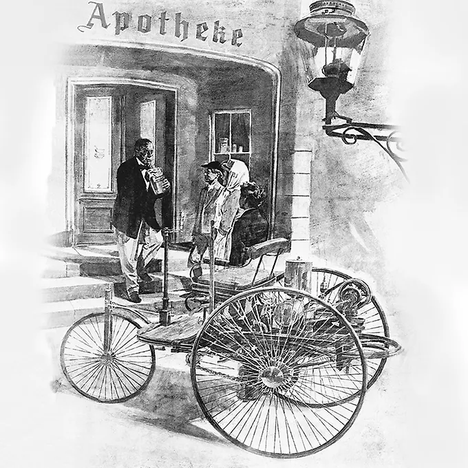

The world's first car
The first stationary gasoline engine developed by Carl Benz was a one-cylinder two-stroke unit which ran for the first time on New Year’s Eve 1879. Benz had so much commercial success with this engine that he was able to devote more time to his dream of creating a lightweight car powered by a gasoline engine, in which the chassis and engine formed a single unit.

The major features of the two-seater vehicle, which was completed in 1885, were the compact high-speed single-cylinder four-stroke engine installed horizontally at the rear, the tubular steel frame, the differential and three wire-spoked wheels. The engine output was 0.75 hp (0.55 kW). Details included an automatic intake slide, a controlled exhaust valve, high-voltage electrical vibrator ignition with spark plug, and water/thermo siphon evaporation cooling.

Using an improved version and without her husband’s knowledge, Benz’s wife Bertha and their two sons Eugen (15) and Richard (14) embarked on the first long-distance journey in automotive history on an August day in 1888. The route included a few detours and took them from Mannheim to Pforzheim, her place of birth. With this journey of 180 kilometers including the return trip Bertha Benz demonstrated the practicality of the motor vehicle to the entire world. Without her daring – and that of her sons – and the decisive stimuli that resulted from it, the subsequent growth of Benz & Cie. in Mannheim to become the world’s largest automobile plant of its day would have been unthinkable.